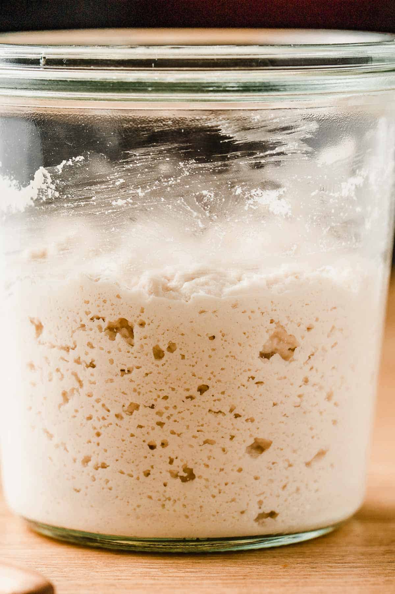

Simple Starter
Home

What Is A Starter?
A sourdough starter is a culture of wild yeast and bacteria created by combining flour with water and allowing it to ferment. After it has reached maturity, it can be used in place of traditional yeast to create sourdough!
Equipment
- 2x Sealable 24oz container (for example, a mason jar)
- Digital kitchen scale
- Thermometer
- Hands
Ingredients
- Flour (all purpose, rye, whole wheat, whatever)
- Water
- That's it!
Steps
- Pour 115g water into your container (temperature should be around 75°F)
- Add 115g of chosen flour
- Mix to combine and let sit for 12 hours
- Transfer 115g of starter to your second container
- Pour 115g water into your container
- Add 115g of chosen flour
- Mix to combine at let sit for 12 hours
- Repeat this process twice a day until starter starts tripling in volume (anywhere from 5-7 days)
- Reduce feedings to once a day